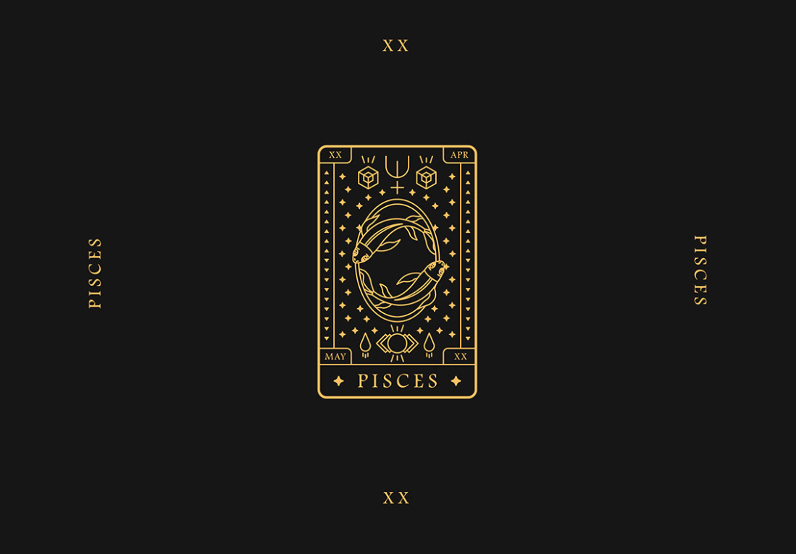

Piscis
ualquiera que comparta su vida con un Piscis (nacidos entre el 19 de febrero y 20 de marzo), habrá tenido que llamar su atención en más de una ocasión porque, literalmente, son capaces de teletransportarse a otra dimensión y ser completamente ajenos a lo que ocurre a su alrededor. ¿Siempre están en las nubes? Siempre están en las nubes, pero no lo hacen a propósito: son los más místicos del zodiaco por estar regidos por Neptuno, el planeta de la espiritualidad y el que nos conecta con las cosas invisibles de la vida.
